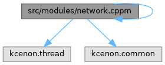

- Generated by
 1.12.0
1.12.0
|
Network System 0.1.1
High-performance modular networking library for scalable client-server applications
|
Primary C++20 module for network_system. More...

Go to the source code of this file.
Classes | |
| struct | kcenon::network::module_version |
| Version information for network_system module. More... | |
Namespaces | |
| namespace | kcenon |
| namespace | kcenon::network |
| Main namespace for all Network System components. | |
Functions | |
| VoidResult | kcenon::network::initialize () |
| Initialize the network system with default production configuration. | |
| VoidResult | kcenon::network::shutdown () |
| Shutdown the network system. | |
| bool | kcenon::network::is_initialized () |
| Check if network system is initialized. | |
| constexpr const char * | kcenon::network::version () noexcept |
| Get the network system version string. | |
Primary C++20 module for network_system.
This is the main module interface for the network_system library. It aggregates all module partitions to provide a single import point.
Usage:
Module Structure:
Dependencies:
Definition in file network.cppm.